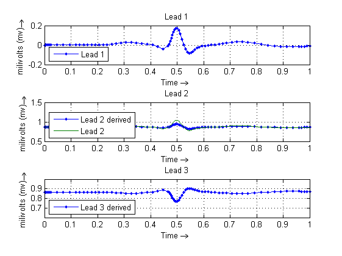
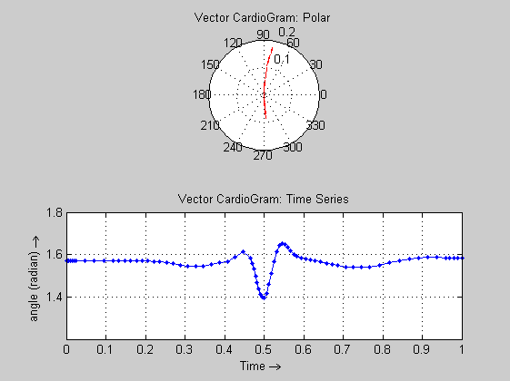

clear all;
clc;
t0 = 0; tf = 1;
x0 = -0.1; y0 = 0; z0 = 0;
options = odeset('OutputFcn',@odephas3);
global thetai
global heighti
global widthi
configEcgSyn(1);
[T1,Y1] = ode45(@ecgsynSolver, [t0 tf], [x0 y0 z0], options);
configEcgSyn(2);
[T2,Y2] = ode45(@ecgsynSolver, [t0 tf], [x0 y0 z0], options);
subplot(3,1,1);
plot(T1, Y1(:,3),'.-');
legend('Lead 1','Location','SouthWest');
xlabel('Time \rightarrow '); ylabel('milivolts (mv) \rightarrow ');
grid on; title('Lead 1');
subplot(3,1,2);
plot(T1, cos (pi/3 - acos(Y1(:,3))),'.-', T2, 0.863+Y2(:,3));
legend('Lead 2 derived', 'Lead 2','Location','SouthWest');
xlabel('Time \rightarrow '); ylabel('milivolts (mv) \rightarrow ');
grid on; title('Lead 2');
display 'Derive Lead 3';
subplot(3,1,3);
plot(T1, cos (2*pi/3 - acos(Y1(:,3))),'.-');
legend('Lead 3 derived','Location','SouthWest');
xlabel('Time \rightarrow '); ylabel('milivolts (mv) \rightarrow ');
grid on; title('Lead 3');
figure; subplot(2,1,1);
display 'Vector CardioGram: Polar';
polar(acos(Y1(:,3)),Y1(:,3),'--r');
grid on; title('Vector CardioGram: Polar');
subplot(2,1,2);
plot(T1, acos(Y1(:,3)),'.-');
display 'Vector CardioGram: Time Series';
grid on; title('Vector CardioGram: Time Series');
xlabel('Time \rightarrow '); ylabel('angle (radian) \rightarrow ');
Configuring lead 1
Configuring lead 2
Derive Lead 3
Vector CardioGram: Polar
Vector CardioGram: Time Series
 